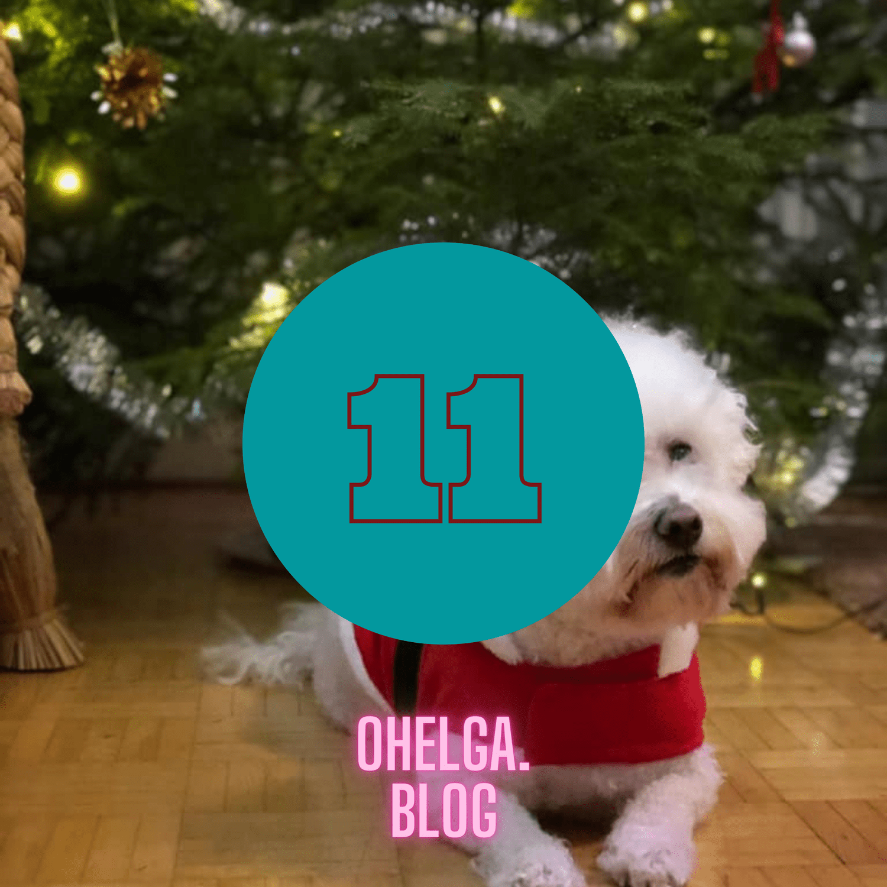

Artisten som förenar insektvärlden med Kalle Anka och den humanistiska hedersdoktorn. Ja tämän lisäksi vielä vanhemmat jotka mahdollisesti editoivat wikipediaa.
Linkit kappaleeseen:
Apple Music:
Spotify:

Artisten som förenar insektvärlden med Kalle Anka och den humanistiska hedersdoktorn. Ja tämän lisäksi vielä vanhemmat jotka mahdollisesti editoivat wikipediaa.
Apple Music:
Spotify:

Kommentit / Kommentarer (1)
<p>Killen hade gått in i studion och spelat in en julskiva för att dryga ut juklappskassan och sen gått ut igen. Inget som berörde här. Och att som opersångare inte ens försöka sig på tonen – vad är det för en "operasångare"?</p>